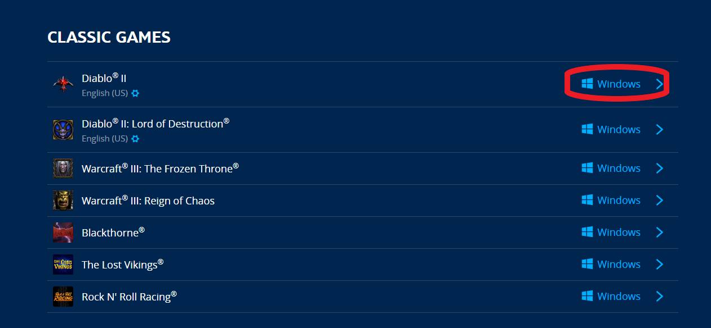
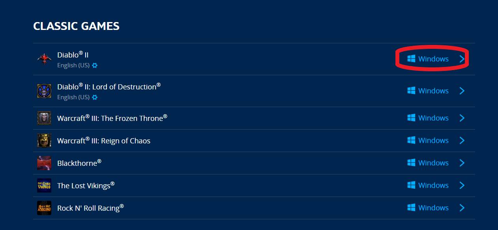
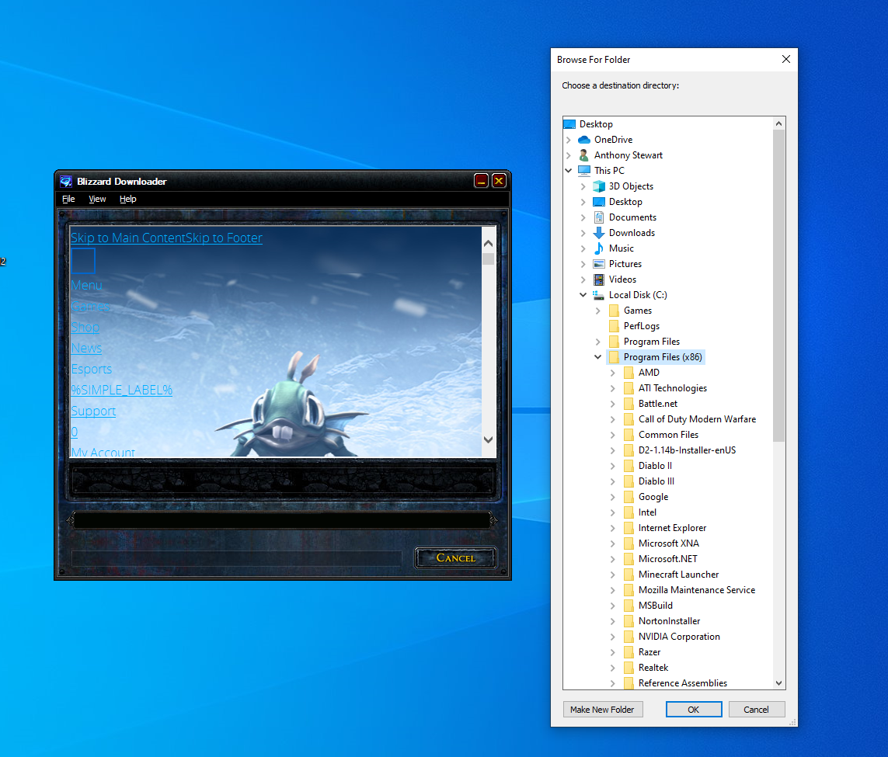

How to install Diablo 2
By: Anthony Stewart
Introduction
When opening in firefox there may be some dispaly issues, recommended to open in chrome!
Diablo 2 is quite an old game. But is still one of my favorite games to ever be created. Recently it had a patch go live to make it easier for people to install diablo on modern machines. These patches are not 100% fool proof so this guide will hopefully solve all your issues you may be having with installation.
Things you are going to need
Copy of Diablo II and/or it expansion License(a.k.a: CD) keys.
A laptop/Destop with winodws 10/7 (This is geared towards a windows 10 tutorial) With an active internet Connection.
Instillation Process
Getting License Key
If you dont already have a copy of the game, or do but have lost the License key to your game you will have to purchase one online Here.

You are going to have to create an account to purchase the game. But no worries once you do, you will have set up your account for online mutiplayer aswell!
Once you have created an account and purchased the game you can acces the License key from your Games & Subscriptions in your account settings. Diablo 2 will be way down towards the bottom. The license key will be used later and is used to verify that you have actually bought a copy.

Downloading the Installer
Once you have your License Keys we will next Download the Game Client which can be found right next to the License keys from ealier. You will want to download Diablo base game first even if you have both License Keys. Click on the blue link "Download Game Client" and proceed to click windows link to the right of Diablo ll.
 

When prompted make sure to download it to your windows desktop on the left hand side to make finding it easier. If this doesnt pop up then thats fine, it just means it was automatically put in your downloads folder, or wherever your default download location is.

Installing Diablo ll
Make sure to run the client in administrative mode as sometimes it can cause some issues if you dont. To do this you simply right click the program and select properties at the very bottom. Once the properties window is open you will notice multipule headers, you will want to click on the compatibility one. In the settings box you will see "Run this program as an administrator". Select that option, click apply then ok. When running the program it will ask to run in administrative mode from now on.

When first opening the program it will warn you of possible viruses, to proceed click on the tiny "more info" link that is underlined in the text. Begin running the Game Client. When opeing the game client some warnings will pop up and ask if you wish to continue running the script, this is due to some outdated online coding on blizzard and select no a couple of times until the go away.
When selecting a destination folder you will want to select MY PC-LOCAL DISK-Program files x86 or 64
Once it has completed installing It will then ask to start its download, and this will ask for your Name and License Keys. Hopefully you kept them open and can enter them in and it will again ask for another install location which then you will select the same spot as last time.

YAY! you just sintalled Diablo 2, this isnt the end as getting it to run can also be a pretty hard task so look below for tips on what might be the problem. I also reccomend you put the game launcher into ADMINISTRATIVE MODE aswell. If you have the expansion you will do these steps again but with the expansion launcher found directly underneath the regular Diablo Game Client Download Here
FAQs
Troubleshooting
Sometimes when trying to run the game you can have multipule problems including wrong colors, lots of stuttering, or even not being able to run it at all.
Wrong colors
This can be fixed easily by selecting the properties option on the game icon and in compatibility tab select the check box reduce color mode and begin running through the options until the color issues are fixed. If this does not help you may want to run the game in windowed mode which you can do by simply adding a -w at the end of the game name under general tab.


Not running
The main cause of this is the computer is trying to run the old game on current hardware which this game being made in 1999, can have some trouble. We will reopen the properties option of the game icon. Once there reselect compatibility and select the check box, run in campatibility mode and choose windows xp service pack 3. Also disabling fullscreen optimizations may help if the previous does not fix.

Support Link
Diablo 2 Support: This is unfortuanatly under an umbralla as the game is not longer under development and is such in the classic games support.
How to Contribute
Some of the best ways you can contribute is by buying the games legally instead of Downloading illegal codes. You can also help by playing the game online as it will help the game feeling alive!
Licensing
Licensing: This will take you to see all the legal documents and information you need. All Diablo conent you see is not my own and I had nothing to due with the creation or management of Diablo 2